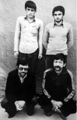
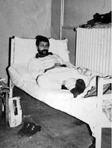
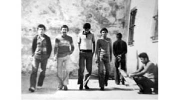

“Oğluma Kıyamadım, Sloganları Duvara Ben Yazdım!”
İsmet Kahraman28
12 Eylül döneminde iki kızımı ve iki oğlumu içeri aldılar. Kızlarımdan biri öğrenciydi, biri de öğretmen, oğullarım okuyorlardı. İçeri alınanlardan büyük oğlum 1954, küçük oğlum 1955, büyük kızım 1958, küçüğüyse 1960 doğumluydu. 4’ü de içeri girdi ama küçük oğlum adi suçtan yattı. Onu örgüte hiç dahil etmediler. Halbuki o da diğerleri kadar içindeydi ve aktifti. Büyük oğlum ve kızlarım 141, 142, 146, 175. maddelerden yargılandılar. Yani devleti yıkmaya teşebbüs, silahlı sol örgüt kurmak, bombalı pankart, komünizm propagandası yapmak, gibi... Büyük oğlum 22 ay yattı, kızlarım 13 ay yattı. Diğer oğlum –dava dışı olmasına rağmen– o da 14 ay yattı. Halkın Kurtuluşu Görele davası olarak geçiyordu. Sadece benim çocuklarım değil amca çocukları da vardı. 3 tane kuzen grubuydular içeride. Bir kuzen İGD, bir kuzen Kurtuluş, bir kuzen Halkın Kurtuluşu. Köyün diğer mahallesi de MHP’li faşistlerin olduğu bir bölümde yer alıyordu. Savcı 3 hareket olarak bizim çocukları birleştirmişti.
Küçük oğlum Görele’de Askeri Cezaevi’nde, kızlarım Keşap Cezaevi, Trabzon Cezaevi ve Erzincan Askeri Cezaevi’nde yattılar, büyük oğlum Görele Cezaevi, Giresun Cezaevi ve Erzincan Askeri Cezaevi’ne alındı. Ortalık çok karışık olunca küçük oğlum askere gitti ama Edirne’den Görele’ye askerden geri getirdiler, önce cezasını yatsın diye. Cezası bitince yeniden askere gitti.
Darbeden Önceki Hayat
Ben okuma yazma bilmem. Eşim de 5. sınıfı bitirmiş ve terzi olmuş biriydi ama çocuklarıma müsellemeyi hep o öğretmişti. Çok güzel terzilik yapardı. Muhtardı aynı zamanda. Esnaf ve Sanatkârlar Derneği başkanıydı. Bir taraftan da insanlara enjeksiyon yapardı. O becerisi de vardı. Bütün Giresun, Görele halkı tanırdı. Çok iyi bir annenin ve babanın evladıydı. Ölümünden 1 hafta öncesine kadar elinde iğnesi, çalışan bir insandı.
Kayınvalidem de melek gibi kadındı. Ben de bir geliniydim. Komşularımızla ilişkilerimiz iyiydi. Hep insanlara yardımcı olmaya çalışırdık. Yardımlaşma duygusu çok önemliydi yaşadığımız yerde. Darda kalmışlara elimizi uzatmaya çalışırdık. Ben, annem, kayınvalidem ve anneannem ile aynı evde yaşıyordum.
Siyasi işler ülkeyi sardığında evden ayrılmış, evlenmiş kızlarım vardı.
Şevketlerin edebiyat öğretmeni vardı lisede. Fatsalıydı. Onun kardeşi de bizimkilerin sınıfında öğrenciydi. Kendisi Kızıldere’de öldürülen Ahmet Atasoy’un hala oğluydu. Ama çizgi olarak Halkın Kurtuluşu’ndandı. Bizim çocuklar onların efendiliğinden ve farklılığından etkilenmiş. Şevket, değişik müzikler (rock müziği) dinliyordu o sıralar, uzun saça heves etmişti. Oradan tanışmışlar. Siyaset konuşmuşlar. Daha sonra İstanbul’da üniversite kursuna hazırlanırken beraber kaldılar o çocukla. Hatta Fatsa’nın belediye başkanı vardı, Fikri Sönmez, içeriden çıkmış, çocukların evine gelmiş. Onu anlatırlardı. Kendi ailemiz içinde de vardı başka siyasetlerden insanlar.
Eşim, sosyal demokrat bir kökenden gelmiş, Atatürkçüydü ama çocukları reddedecek bir tavrı olmadı. Ayağınız yere bassın, kendi yaşamınızı kazanın, kendi yaşamınızı birinci plana alarak mücadele verin diye öğütlerdi hep. Bense “Tamam, yaparız ederiz oğlum” diye destek olurdum.
Kıyamadım, Ben Yazdım
1980 öncesiydi. Şevket’in hep yaptığı işlerden biri geceleri yazı yazmaktı. Ama o gece bir yere gitmesi gerekiyormuş. Boya ve diğer malzemeleri kardeşine bıraktı, bana da tembih etti “Ben bu gece gelemeyeceğim, Ahmet’e söyle şu saatte kalksın. Yanına da arkadaşları alsın, şu sloganları, bu gece yazsın.” Sloganları da kâğıda yazmış, bana verdi. Tamam oğlum dedim. Beni öptü, çıktı. Ertesi gün geldiğinde evde kardeşi yoktu ama gelirken bakıyor, sloganlar yazılmış. “Anne” dedi “Ahmet’i kaldırmadınız mı? Bu duvarlara kim yazdı, n’aptınız. Niye benim sözümü tutmuyorsunuz?” “Oğlum yok yok o uyuyordu kıyamadım da…” diye açıklamaya çalışmıştım. Hakikaten kızlarımdan biri ve ben Şevket’in hazırladığı beyaz boyayı, bakracı, fırçayı aldık elimize, soran bekçilere de kızım yeni doğum yaptı da ona süt götürüyorum filan diye kandırarak saat 9 ve 10 arasında, sinemada film gösteriliyorken Şevket’in kâğıda yazdığı “faşizme ölüm, halka hürriyet, yaşasın ulusal demokratik halk devrimi, kahrolsun faşist diktatörlük” sloganlarını duvarlara yazdık. Yakalanmadan geldik.
Çocuklar Alınıyor
Şevket hem üniversiteye hem de siyasete devam ediyordu. Sürekli Trabzon’la Görele arasında gide gele okulu bitiremedi. Para kazanmak için düğünlerde, balolarda sünnetlerde grubuyla çalardı. Bir gün, (16 Ağustos 1980’de) düğün salonuna gittiğinde yüzbaşı ve iki polis “gelsene” diye Şevket’i kenara çekmişler. Buyrun komutanım demiş. Karakola kadar gidelim demişler, eline kelepçe vurmamışlar ama Şevket anlamış hayırlı bir iş olmadığını. Elinde Cumhuriyet gazetesi varmış. Bunu babama bırakayım komutanım demiş. Gel deyip, omuzundan tutmuşlar, yok yok sonra gidersin diyerek karakola sokmuşlar. O şekilde gözaltına almışlar. Görele Karakolu’ndan Giresun’a onları götürmeye bir ekip geldi. Arabanın önünü kestik. Kızlarımdan biri “Kahrolsun faşistler, ağabeyimi götüremezsiniz. Parsellendi mi Emniyet’in kapısı?” dedi. Bunun üzerine insanlar toplanmaya başladı Emniyet önünde. Ekiptekiler bize dedi ki “Görele devleti tanımıyorsa biz de Görele’yi tanımıyoruz”. Onlara engel olamadık tabii ki. Sonra Giresun’da işkence gördüğünü anladık, birkaç gün sonra Görele’ye mahkemeye getirdiler. Camın arkasından görüyoruz: Şevket’in kolu mor, sigara izleri vardı, dayak atılmış. Şevket Halkın Kurtuluşu hareketinin eylemlerinden sorumlu tutuldu. Örgütleme çalışmasını yapmakla suçlandı. Önceden tutuklananların ifadeleri çoğaldı çoğaldı, bir kısmı Halkın Kurtuluşu’nu, bir kısmı o günün diğer örgütleri olarak Devrimci Yol, Kurtuluş ve İGD’yi suçladılar. Farklı siyasetlerin Görele davası. Herkesin birbiriyle bağlantısı, arkadaşlığı, dostluğu var zaten. Ne olmuş işte, lisede korsan bir miting yapılmış, bunun içinde hepsi var. Düğün de yapsan üzerlerine kalıyor. Yapan kim, o kişiler. Ne yaparlarsa yapsınlar üzerlerine kalıyor. Çünkü halkın yanında olmaları suç oluyor. Ondan sonra tutuklandılar. Tekrar Giresun’a götürüldüler.
Küçük oğlum askerden önce ruhsatsız silahla ateş etmek suçundan aranıyordu. Sonra ceza ertelendi diye askere gitti ama cezası kesildi. Kızlar da 6 ay sonra, 1981’in Ocak ayında yeni bir operasyonla ele geçirildi, diğer arkadaşlarıyla gözaltına alındılar. Ocak ayında 3 kardeş evden alındılar.
Giresun’a götürdüler. Biz de gittik arkalarından ama dövmüşler, işkence etmişler biz yetişene kadar. Benim çocuklarımın ne kabahati var dedim, söylendim biraz. Komşumuz Hasan Dede vardı, niye götürüyorsunuz, bu kızların suçu ne demiş yüzbaşıya. O da demiş ki “Bize Giresun’dan emir geldi, ben kendi kafama göre almadım. Bir liste var, buradakileri alacaksın” dediler. Giresun’da birkaç gün kaldılar. Çocuklarımızın suçu yok dedik. Nereye götürdünüz çocuklarımızı dedik. Göstermediler. Bizden sonra Keşap’a götürdüler. 3 ay yattılar Keşap’ta. Bazen gittiğimizde az da olsa gösteriyorlardı.
Bütün çocuklarım siyaseten aynı çizgideydiler. Ee suçlandıkları şeyler de aynıydı: Kurulu düzeni yıkmak, komünizm propagandası yapmak, halkı örgütlemek, devleti yıkmaya çalışma çabası göstermek.
Çok sıkıntı çektik. Para bulunuyor yine ama ne yapacağımızı şaşırdık. Çocuklarımız bizden ayrı iş görmüş olsalar, kötü bir iş yapmış olsalar insan acımaz. “Size gitmeyin dedik!” derdik. Ama şaştık kaldık. Gelinlik kızlar, oğlanlar da delikanlı. Kimseye bir şey yapmadıkları halde alıp götürdüler. Günahı başlarına olsun. Asker diyor ki “Sizin yerinizde olsak buraya gelmezdik. Kabahat işlemişler.” “Ne kabahatleri var müdür bey? Kabahat işleseler ben saklamam söylerim. Tembih ederim çocuğuma. Bir şey yapmadı çocuklar. Yalandan yakıyorlar çocukları burada. O günahtan nereye gidersiniz?” dedim komutana ama bizi dinleyen kim. Onlar dövdüler çocukları. Kiminin belini ağrıttılar, kiminin kolunu, kiminin kulağı sağır oldu. Ağladım, söyledim. Askerin yanında, polis komiserinin yanında çok ağladım, çok rica ettim ama merhametsizler, dinlemediler beni, inanmadılar hesapta. Yalan mı söyleyeceğim? Yanımdaki çocukları aldılar, yanımdaki çocuklar, yatıyor, uyuyor, gece yataktan aldılar. Ben yalan niye söyleyeyim? Onlar kendileri gibi beni yalan söylüyor zannediyorlar. Bazı çocukları haddinden fazla dövmüşler. Bağırmışlar, çağırmışlar, dövmüşler. Biz bunlara üzüldük. Bizim çocukların suçu yoktu, korkulacak, utanacak bir iş yapmamışlardı.
Görüşlere gidiyoruz. Yiyecek götürüyoruz, giyecek götürüyoruz. Sırtımızda, elimizde, arabayla... Elimizden geldiği kadar gitmek istedik. Arkadaşları giderdi az çok. Tabii bu ailelerin yaşadıkları perişanlık ayrı. Gece gündüz uyku yok, ayaktaydık. Cezaevi cezaevi gezdiler. Hangi gün, hangi görüş... 4 çocuk 3 farklı cezaevinde... Paket hazırlama, götürme... Biri Trabzon’da, biri Giresun’da, biri Görele’de. Daha sonra Şevket’i Giresun’dan Erzincan’a götürdüler. Tahliye olmadan önceki son 1.5 ayda bir araya gelmiş oldular Erzincan’daki cezaevinde.
Komşular hiç ayağını kesmedi, evimize geldiler gittiler. Onlar da bizim gibi üzüldüler. Karşımızda olmadılar, destek oldular. Çocuklarımız cezaevinden çıkıp geldiğinde evimiz doldu yine. Kayınvalidem yaşlıydı ama çocukları görmek isterdi. Babaanneyi de götürdük Giresun Cezaevi’ne. Yaşlı ama arabayla gidiyor. Taksiye bindiriyorsun, götürüyorsun. Beni de götürün, diyor. Kucaklaşma izni alırdık. Kelepçeli öpüşürdük çocuklarla.
Mahkemeye Gidişimiz

Şevket Kahraman cezaevinde
arkadaşlarıyla
Mahkemelere de gittik. Sevinçle gider, üzüntüyle gelirdik. Tahliye olacak diye bekledik epeyce bir zaman. Çocuklarımız sağ salim çıksın da ona şükredelim dedik. Lazım değil dedik yanları yöreleri, gördükleri işkenceler...
Kış günü Ziganalardan, Koplardan geçerek Erzincan Bahçecik’e mahkemelere gitmeye çalışıyorduk. Bir otobüsle, karda bata çıka... Mahkûm yakınları ile beraber gittik. Anneler gidiyordu. Kelkit’e çıktık. Kelkit’ten öteye Erzincan’a yol yok. Orada kaldık. Erkekler kahvede kaldı. Biz de yukarıda bir yerde kaldık. Kızlar, kadınlar, anneler... Gidemedik öteye. Erzincan’a giden yol kapalı. Kar püskürüyor yolda. 3 tane de yol açıcı arabalar var. Biri birine atıyor, 3 kişi karı saçıyorlar. Açtılar yolu. Herkes koşuyor. Çocuklarımıza kavuşmak istiyoruz bir an önce. O yolu yukarı doğru dönünce yüzümüz güldü. Çıktık yukarı, cezaevinin kapısının önünde geniş bir yere, harman deriz biz köyde, çıktık çocuklarımızı görmeye. Çocuklar da kızlar da öbür taraftan geliyor, yattıkları yerden. Biz de olduğumuz taraftan geliyoruz. Açık görüş. Bizi beklemişler. Bitmemiş mahkeme. Bir çocuk kürsüye çıkmış, dava dosyası okunuyor. Avukatı Sinan Bidük hem okudu hem ağladı. Biz de çocuklarla sarılıp ağlaşıyoruz. Çocukların tutuklandıkları zamandan beri ne yaşadıklarını o ifadelerden anladık. Hep beraber ağlaştık. Akşama döneceğimiz yeri hazırlıyoruz bir yandan da. Bereket ki yanımızda elektrik ocağı vardı. Bir hafta otelde kaldık.
Tutuklu yakınlarıyla beraber hareket ediyorduk. Tanıdıklarımız, konuştuklarımız vardı. Kendisi gidemiyorsa diğerleriyle bir şey gönderiyordu. Bir sürü sıkıştık. Bir sürü zorlandığımız durumlar oldu ama yine de dayanışma vardı. İstanbul’da çalışan çocuklarım da kardeşlerinin sevdiği şeyleri gönderiyorlardı. Özel pastanelerden alıp otobüse veriyordu veya kendileri gelirken getiriyordu. Herkes bir şeyler yapmaya çalışıyordu.
Öğretmen kızım ceza aldı. Onun da diğerlerinden farklı bir suçlaması yok. Silah vardı. Bahçelerde bulunmuştu... Bizim bölgede kan davası da etkili. Bir yaşlı teyzemiz vardı, kan davasından dolayı silah bulunduruyordu. Yakalanmış bir yerde. Bunlar örgütün silahları diye rapor etmişler hemen... Halbuki hep olan bir şey, böyle yaşanıyor köylerde. O kadın da örgüt üyesi diye bizimkilerle yattı, Şaziye Teyze. Şeker hastasıydı. Yani kiloluydu, sıkıntılıydı. Sonra aklandı.
Öğretmen kızım ceza aldığında evliydi. Bir de küçük çocuğu vardı. Kaçak durumuna düştü. Okuluna geldiler. Sonra tekrar mahkeme kararı bozuldu Yargıtay’dan. Bozulması için de başka kanıtlar toparlandı. Başka ifadeler toparlandı, konunun öyle olmadığına dair arkadaşları tekrar ifade verdiler. Yani kızım öyle beraat etmese içeride yatacaktı ama o süreç, o kaçaklık süreci bayağı bir uzundu. O çok bunalımlı geçti. Nereye gideceğini bilemedi, çocuk da var... Bize geldi. Babası çok üzülüyordu. Evde, her an gelip alsalar, çocuk küçücük daha. Kendisi ile dolaştı bu kaçaklık döneminde. Yargıtay’ın kararı ile beraat etmiş oldu.
Çıktıktan Sonra
Nisan 1982’ydi. Şevket çıktı ve 4-5 ay sonra evlendi. Askerlik için aranıyordu. Okuldan atılmıştı ve kardeşi de askerdeydi. Sonra kızı oldu 1983’te. Kardeşi askerden geldi. Eşi hemşire olduğundan Giresun Devlet Hastanesi’ndeydi. 1984’te Şevket askere gitti. YÖK affından yararlanarak tekrar okula döndü ve 4 yıllık fakülteyi 15 yılda bitirdi. Giresun’da çalışıyorlar. İşyeri orada, karısı orada. Bir gün ablasının kızı ve arkadaşını evine çağırmış. Eve gelen giden olunca Şevket yine bir şeyler yapıyor diye alıp Trabzon’a götürmüşler. Biz köyden indik aşağıya, duyduk olanı. Bu sefer çoluk çocuk sahibi, daha zor. Babasıyla köyden tanıdığımız birinin yanına gittik. Askeriyede çalışıyor. Sarıldım ben ona: “Şevket faşistlerin odasında oturuyor. Çok dayanacak halimiz kalmadı. Yine almışlar oğlumuzu” dedim. Hemen telefon etmiş. “Çocuğu neden oturtuyorsunuz boş yere. Bırakın çocuğu” demiş. Bıraktılar da Boztepe’ye yolladılar. Boztepe’de askeriye var. Askeriyenin elinde olsun diye. Biz yine geldik oradan teslim aldık.
Öğretmen kızım tahliye olduktan sonra tayini Maraş’a çıktı. 3 senede 3 ilçe değiştirdiler. Ve gittiği yerlerde de sivil polisler onları sürekli takip etti. Farkındalardı, gizli zannediyorlar ama...
Sonra bizim Görele’deki evin önünde de karşıda köşede, kim girip çıkmış eve diye devamlı sivil polis takip ederdi. Arada sadece dükkâna gelip kocama, çocuklar ne yapıyor diye sorarlardı. Evi seyredenler... Balkona biri gelmiş mi, çıkmış mı diye bakanlar…
Doğrusu, eşim çok koşturdu, çok sıkıntılar yaşadık. Çok bedel ödedik. Hâlâ onun izleri var. Her anlamda geri gittik. Tam düze çıkmak üzereydi her şeyimiz, çok normaldi... 8 öğrenci çıkıyordu her sabah kapıdan, evden. Ama bu olaylar olunca her şey altüst oldu. Dünyamız altüst oldu. Bütçe zaten karmakarışık oldu…
Bir gün bir savcı, Adıyaman’ın bir ilçesinde çalışıyormuş, kızlarımdan birini görmek istemiş. Yani talip olmuş ona. Savcı kızımı sorunca demişler ki, kardeşleri içeride. O da vazgeçmiş.
Bir diğer kızımsa Devrek’e sürüldü. Hiçbir derneğe filan üye değildi, hiçbir faaliyeti de yoktu. Herkes ona soruyor buraya neden geldiniz diye. Bir gün müdür bey çağırmış, kızım sen buraya neden geldin diye sormuş. Bilmiyorum müdür bey, siz öğrenirseniz bana da söyleyin demiş. Birkaç gün sonra genel müdürlükten bir belge, yazı gelmiş. Kızıma okutmuş. Gelen yazıda Devrek merkezine geliş nedeni için içeride yatan dört kardeşi sebebiyle gözetim altında çalışması gerektiği ve 61’e E maddesine göre sakıncalı olduğu yazıyormuş.
Eşimin koşmadığı iş kalmadı. Hem çalışıyordu bir taraftan hem de Şevket’in orkestrasının düğün programlarını yapıyordu. Yani çok yoruluyordu. Eşimi 1995’te kaybettik. Çok hassas, duygusal biriydi zaten.
Hiç Unutamadığım Anlar...
Ramazanda otuç tutmayanları şişliyorlardı, içerideki tutucular. Bir gittik, baktım Şevket gelemedi görüşe. Çıkamaz, hücrede dediler. Ödüm koptu. Oruç yüzünden hücreye atmışlar Şevket’i. Tabii deliye döndük biz.
Yün çoraplar, içi yün kaban götürüyoruz. Çünkü Şevket böbreklerinden rahatsızlanmıştı. Bir gece böbrek sancısı oluyor. Görele Cezaevi de Görele’nin çıkışında. Taksi durağı yok. Jandarma telefon etti bize gece yarısı 2’de. İğne vurmak için eşimi çağırdılar. Eşim biraz ürkekti, her şey olur yolda izde diye bir yere gitmeye çekinirdi. Kayınvalidem onu çok nazlı büyütmüş. En unutamadığım anılardan, ta Görele’nin şehrin içinden Çömlekçi’ye, elinde

Şevket Kahraman hastanede
iğne kutusu, şimdiki gibi enjektör yok tabii, 4 km’ye yakın yol yürüdü. Bir de karanlık. Gecenin ikisinde, tek başına yürüdü gitti. Aklıma geldikçe çok tuhaf oluyorum.
Cezaevi jandarması, Görele Merkez Jandarma’yı aramış. Kocam gardiyanlara çok elbise dikmişti, bir asker de bize haber verdi. Dedi ki Şevket’i hastaneye götürmüşler, Numune’ye. Ne oldu dedik? Böbrekleri çalışmıyor demesin mi? Hiç böbreği çalışmıyor dedi. Cezaevindeki gardiyandı herhalde. Meğerse bir böbreği iltihaplanmış, biri çalışıyormuş. Hiçbiri çalışmıyor dedi bize, ödümüz patladı. Böyle acımasız, gaddar, katil insanların içinden sağ çıktılar. Yine biz buna şükrediyoruz.
Kitapları Duman Ettik!
Şevket cezaevindeyken yeni bir operasyonda kızlar da yakalanınca görüşe gittik, Şevket’e anlattım durumu. “Durum çok kötü. Kolay bir yere, evin önündeki tarlaya gömülmüş, üzeri azıcık örtülmüş, hemen hemen ne bileyim 500-600’e yakın kitap, broşür var anne. Onları alın daha aşağıya, bahçenin dereye yakın tarafına gömün” diye tembihledi bana. İyi tamam oğlum dedim. Tabii bir dahaki görüşte ilk sorduğu o oldu. “Kusura bakma ama oğlum, kitapları duman ettik” dedim. Şükriye ablasıyla ikimiz, bir açtık ki, kitapların kimi çürümüş, kimi ıslanmış, kimi rutubet olmuş. Şükriye ablası da dedi ki: “Uşaklardan önemli değil ya, yakalım da cehenneme gitsin bu kitaplar. Canları sağ olsun, yine alırız”. Öylece ateşe verdik. Görüş yerinde gülüştük bunu konuşurken.

Şevket Kahraman cezaevinde volta atarken
12 Eylül Davası
Kenan Evren baştan öyle yapmayacaktı. Bir faydası yok. Günahı başına. Bütün çocukların hakkını ödesin. İdam ettirdiklerinin... Hepsinin hakkını versin. Elin su gibi çocuklarına kıydı. Onların canı yok muydu, onlar genç değil miydi? Evren’e ne ceza verseler yetmez, sürünse de ödeyemez. Hiçbiri geri gelmez. O su gibi gençler gitti. Erdal Eren’ler, hepsi…
Bütün ailelerden özür dilemesi lazım. Dava inşallah kısa zamanda sonuçlanır da, Evren de büyük bir vebal öder. Ailelerin gönlü alınmaz tabii, imkânsız. Hiçbir şey geri gelmeyecek. Çok acı…
28 1923 doğumlu. 11 çocuk annesi. Darbe döneminde 4 çocuğu içeri alındı.